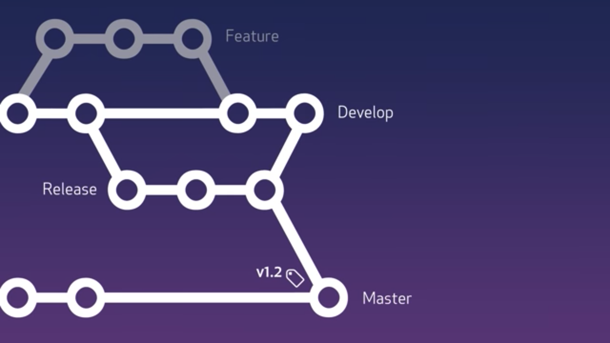

Git Workflow
Using Git effectively and consistently
Why Git workflow?
- To control series of changes.
- Standardize a way among the members of a team.
- Achieve goals in a consistent way.
- Increase productivity.
What is a Git workflow?
(Guideline, No universal solution, Use what works best for the team)
Well Known Git workflow
- Centralize Workflow
- Featre Branch Workflow
- Forking Workflow
- Gitlab Workflow
- Gitflow Workflow
- Github Workflow
- Simple Git Workflow
Gitflow Workflow
- Publishedd by Vincent Driessen
- Based on Feature Branch workflow
- Multiple branches with different roles.
- Type of branches: Main branches and Support Brances
Workflow of Gitflow (Contd...)
Workflow of Gitflow (Contd...)

Workflow of Gitflow (Contd...)
Workflow of Gitflow (Contd...)

Workflow of Gitflow (Contd...)
Workflow of Gitflow (Contd...)
Workflow of Gitflow (Contd...)
Main Branches
- Two main branches
- Life time: never ending
- master: Always production ready
- develop: Always mirrors the current development state
Support Branches
- Help in side by side development between team members
- Short lived branches
- No fixed number of branches
- Typically 3 branches
- Feature branches, Release branches and Hotfix branches
- Branching off and merging strategy is strictly binded.
Support Branches: Feature
- Develop features scheduled for the next release
- One feature, One branch
- Life time: till feature is in development
- Naming Convention: anything-*
- Excpet master, develop, release-*, hotfix-*
- Branch off from: develop
- Merge back to: develop
Starting feature branch
// new feature branch off develop & switch to it
git checkout -b task-1 develop
// Alternative
git checkout develop && git checkout -b task-1
// Make some changes. Add new feature
git add .
git commit -m "Descriptive and meaningful commit message"
git push -u origin task-1
// open pull request (PR) on git server
Review on Pull Request
- Check code quality
- Coding standards, naming convention
- Discuss and share suggestion among team members
Adding feature branch on develop
// Switch to develop
git checkout develop
git merge --no-ff task-1
// remove the feature branch
git branch -d task-1
// Push the changes to git server
git push origin develop
// close pull request (PR) on git server
Support Branches: Release
- Prepare for next release
- Alow develop branch to continously work on new set of feature for the next relase
- Add new feature = not allowed
- Minor bug fixes = allowed
- Life time: till release is merged into develop and master branch
- Naming Convention: release-*
- Branch off from: develop
- Merge back to: develop and master
Starting release branch
git checkout -b release-0.1 develop
/**
* Add some meta data like version control,
* release date & time, change log
*/
git commit -am "Descriptive and meaningful commit message"
git push -u origin release-0.1
/**
* open pull request (PR)
*/
Finishing relase branch
Start with master branch
git checkout master
git merge --no-ff release-0.1
git push origin master
git tag -a 0.1
Finishing release branch (Contd...)
Finish with develop branch
// Switch develop
git checkout develop
git merge --no-ff release-0.1
git push origin develop
// Remove release branch
git branch -d release-0.1
Support Branches: Hotfix
- Fix critial bug in production
- Team memeber continues work on develop branch
- Life time: till bug is fixed and merged into develop and master
-
Naming Convention: hotfix-*
- Mirro production version while naming
- If production version: 0.1 then hotfix version: 0.1.1
- Branch off from: master
- Merge back to: develop and master
Starting hotfix branch
git checkout -b hotfix-0.1.1 master
/**
* Fix bug and add some informatio about bug
*/
git commit -am "Descriptive and meaningful commit message"
git push -u origin hotfix-0.1.1
/**
* open pull request (PR)
*/
Finishing hotfix branch
Start with master branch
git checkout master
git merge --no-ff hotfix-0.1.1
// updating version
git tag -a 0.1.1
git push origin master
Finishing hotfix branch (Contd...)
Finish with develop branch
// Switch develop
git checkout develop
git merge --no-ff hotfix-0.1.1
git push origin develop
// Remove hotfix branch
git branch -d hotfix-0.1.1
Criticism
- Too complex
- Master and develop split is redundant
- --no-ff flag creates messy Git history
Fast forward vs no fast forward
Github flow
- Focused on feature branch
- Only one main branch: master
- No supporting branch
- No broken code in master
- Ideal for continuous integration and continuous delivery
Flow
// Switch to master and pull current state
git checkout master
git pull orgin master
git checkout -b feature-1
// Make some changes
git add .
git commit -m "Descriptive and meaningful commit message"
git push -u origin feature-1
// open pull request (PR) on git server
Flow (Contd...)
/**
* Switch to master and pull current state
*/
git checkout master
git pull origin master
git fetch origin feature-1
git merge feature-1
git push origin master
// close pull request (PR)
Conclusion
- Choose a workflow effective for your team.
- May be create your own workflow.
- Achieve goals in a consistent way.
- Increase productivity.